리프 3D 아이콘 · 광택 · 시네마틱 (Higgsfield)
- 바탕: 지금 리프 줄 아이콘(잎 테두리 + 비스듬한 잎자루)을 참고 이미지로 넣고, 모양 · 각도는 그대로 두고 재질과 빛만 바꿨어요. 모델 GPT Image 2.6 · 1:1.
- 여섯 가지 결: 도자기 · 유리 · 야화 달밤 · 진주 필름 · 젤리 · 금속. 시네마틱 전용 모델(Cinema Studio) 두 장은 Higgsfield 안전 필터에 막혀서 빠졌어요(잎 그림인데 잘못 걸림).
- 아래 칸: 실제로 쓰이는 크기(지갑 40 · 칩 20)로 줄여 본 모습. 작게 보면 배경이 있는 L2 · L3은 정리(배경 지우기)가 필요해요.
3D 시안
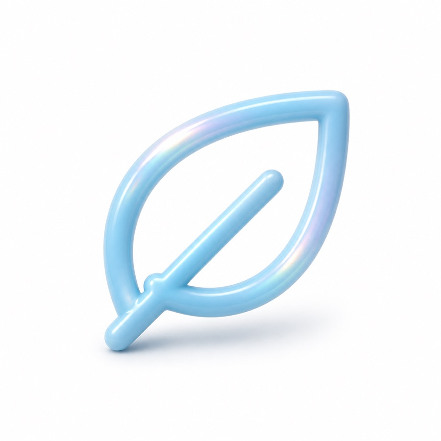
L0 도자기 · 파스텔 매끈한 하늘색 도자기 + 진주빛 하이라이트, 흰 배경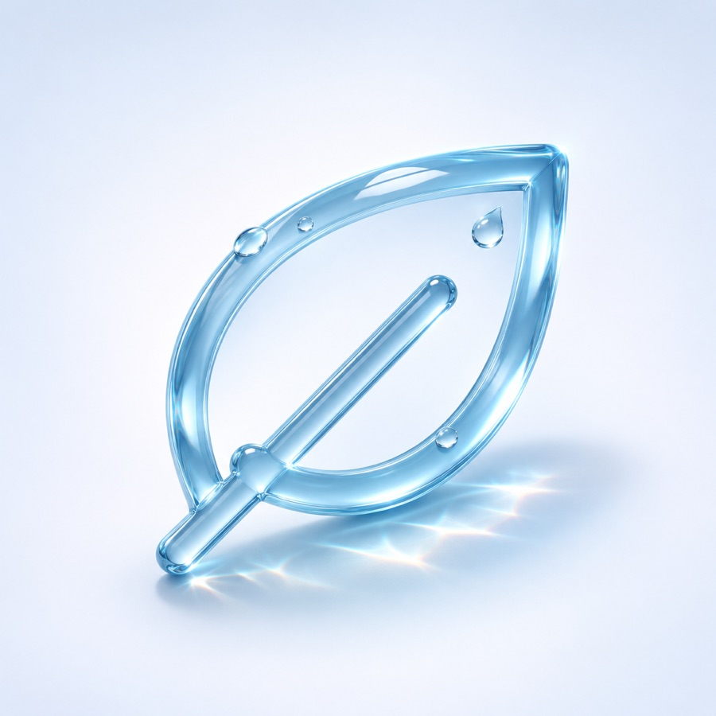
L1 유리 · 이슬 투명한 하늘색 유리, 빛 굴절 · 물방울, 시네마틱 테두리 빛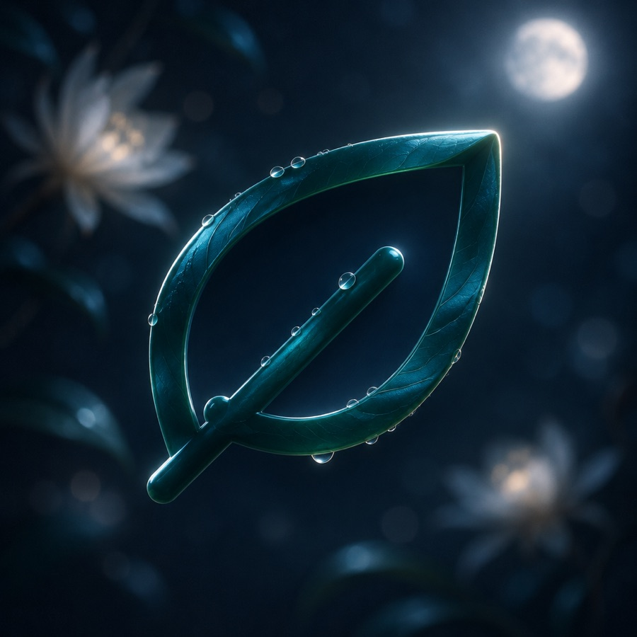
L2 야화 · 달밤 밤에 피는 꽃의 잎 — 어두운 청록 광택 + 달빛 · 이슬 · 보케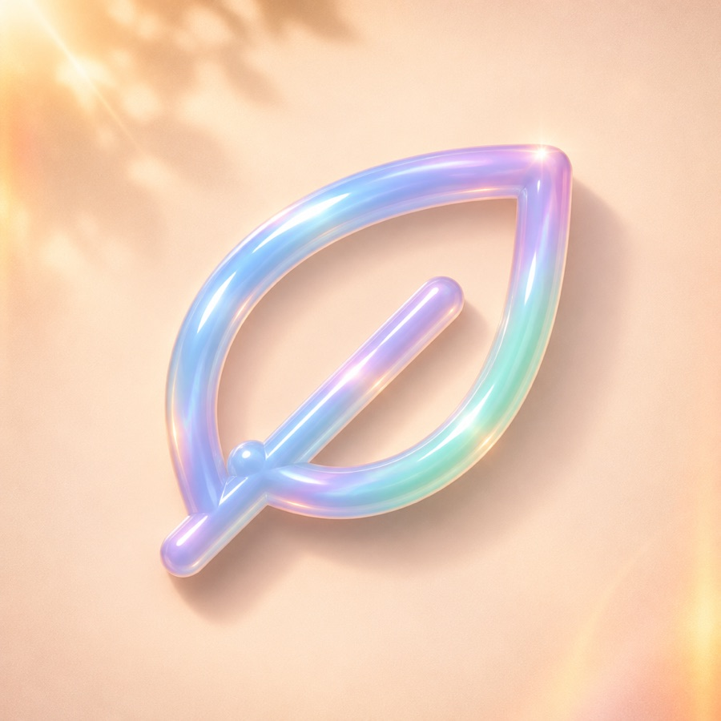
L3 진주 · 여름 필름 하늘 · 라일락 · 민트로 바뀌는 진주빛, 크림 바탕 + 빛번짐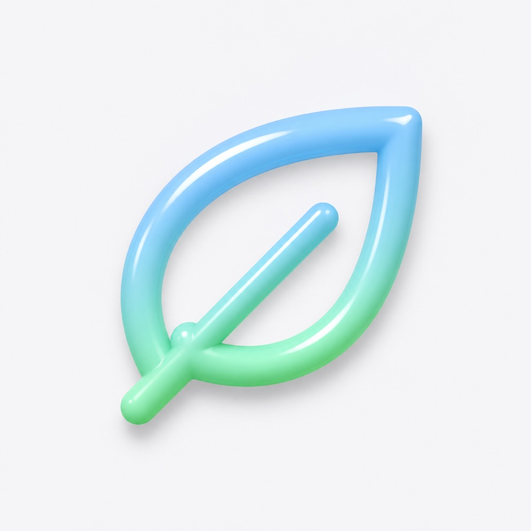
L4 젤리 · 장난감 도톰한 광택 플라스틱, 하늘 → 민트 그라데이션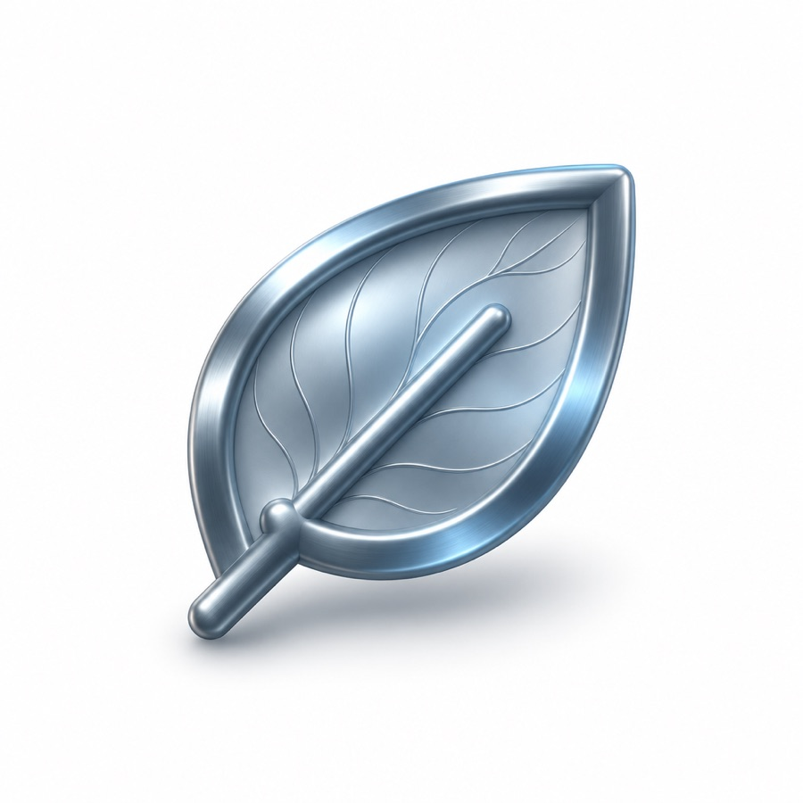
L5 새틴 금속 은빛 파랑 금속 + 잎맥 새김, 고급 아이콘 느낌앱 크기로 줄여 보기
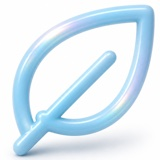
L0 · 보유 리프130리프+20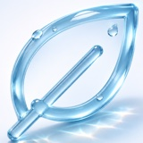
L1 · 보유 리프130리프+20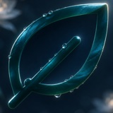
L2 · 보유 리프130리프+20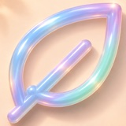
L3 · 보유 리프130리프+20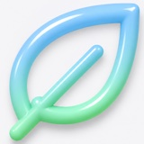
L4 · 보유 리프130리프+20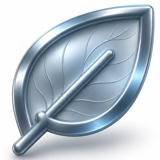
L5 · 보유 리프130리프+20